星途服装（Starclothing）是一家面向中高端市场的服装制造企业，覆盖产品开发与供应链两条主线，拥有完整的款式—面料—打样—大货—品控—排产—对账链路。企业已上线 PLM（产品生命周期）、SCM（供应链）、ERP（人财物）、MES（制造执行）、CRM（客户与销售）五大业务系统，但系统间数据各自为政，业务决策高度依赖人工跨系统巡查与 Excel 汇总。
从产品开发到供应链结算，星途服装在日常经营中面临七个反复出现的痛点。它们共同的特征是：数据散落在多个系统、人工逐单巡查、时效差、易遗漏、缺乏风险预警与闭环。
| 编号 | 业务痛点 | 当前人工方式 | 风险 / 损失 |
|---|---|---|---|
| PD-1 | 订单逾期无人提前预警，往往延期后才发现 | 跟单员手工巡单 + Excel | 客诉、空运补发、赔付 |
| PD-2 | 关键面料成本/交期/产能波动难以及时掌握 | 面料开发员查 SCM + 电话问供应商 | 成本超支、停线待料 |
| PD-3 | 新品缺陷总在量产阶段才暴露，反复返工 | 品控部靠经验复盘 | 批量返工、交期延误 |
| SC-1 | 来料批次靠仓管逐批对 BOM，规格/资质易漏检 | 仓管员逐批核对 | 错料上线、资质过期被罚 |
| SC-2 | 下周排产靠计划员手排产线，瓶颈后知后觉 | 计划员人工排产 | 产线空转或爆单、交期风险 |
| SC-3 | 跨系统单据对账靠财务逐单核对，差异难闭环 | 财务逐单对 CRM/MES/ERP | 账实不符、坏账、客诉 |
| SC-4 | 采购报价靠采购员询价比价，历史异动看不清 | 采购员询价 + 记账 | 采购价偏高、成本台账滞后 |
针对上述痛点，星途服装与 ai_infra 平台共同设计 7 个 AI 应用场景，按归口部门划分，由各部门业务用户在自己的终端直接调用，覆盖产品开发 3 场景 + 供应链 4 场景。
| 场景 | 需求 | 归口部门 | 调用业务系统 | 核心 AI 价值 |
|---|---|---|---|---|
| PD-1 | 逾期订单风险汇总与推送 | 开发部 | PLM | 7×24 自动扫描 + 风险分级 + 补救建议 |
| PD-2 | 关键面料成本交期产能测算与异动检测 | 设计部 | SCM | 实时交期（永不缓存）+ 多供应商评分 |
| PD-3 | 新品缺陷风险预警与闭环待办 | 品控部 | PLM + 缺陷 RAG | 8 类历史缺陷检索 + 评审必查项 |
| SC-1 | 来料批次物料校验与异常回写 | 供应链部 | SCM + MES | BOM 一致性 + 资质有效期 + 闭环回写 |
| SC-2 | 下周工单产线排程与风险提示 | 生产部 | MES + SCM | 四源联动排产 + 瓶颈识别 |
| SC-3 | 跨系统单据对账与差异闭环 | 财务部 | CRM + MES + ERP | 三系统跨表对账 + 差异率 + 闭环 |
| SC-4 | 采购报价比对与成本台账建议 | 商品部 | SCM + ERP | 多供应商评分（40/30/30）+ 成本台账 |
注：归口用户均为 member 业务角色，无管理后台权限；每个用户只能看到本部门可见范围（scope）内的资源，详见第三章 3.7 节分部门安全模型。
七个场景都用同一种终端任务方式：业务用户用自己的归口账号登录终端，新建一个任务、选好模型（glm-5.2）、粘贴一段很简短的提示词（写明"要做什么 + 针对哪些对象 + 用哪项技能"）后点运行。智能体会自己判断该调用哪些业务系统、按什么顺序查，跨系统把数据凑齐，边算边输出结构化结果，最后还自动生成一份 .docx 报告可直接下发。用户提示词之所以能写得很短，是因为"输出格式、业务名词字典、智能体的人设与规则"这三层已由平台和模板预先配好，用户只补"本次目标"即可。
glm / smart / balanced 三个别名，最终都路由到它。开发部智能体：产品全流程监管PLMbalanced→glm-5.2
替代跟单员手工巡单 Excel：智能体 7×24 自动扫描已逾期 / 7 天内将逾期订单，按款号汇总当前阶段、责任人、风险等级，给出推送对象与补救建议，并生成可下发报告。
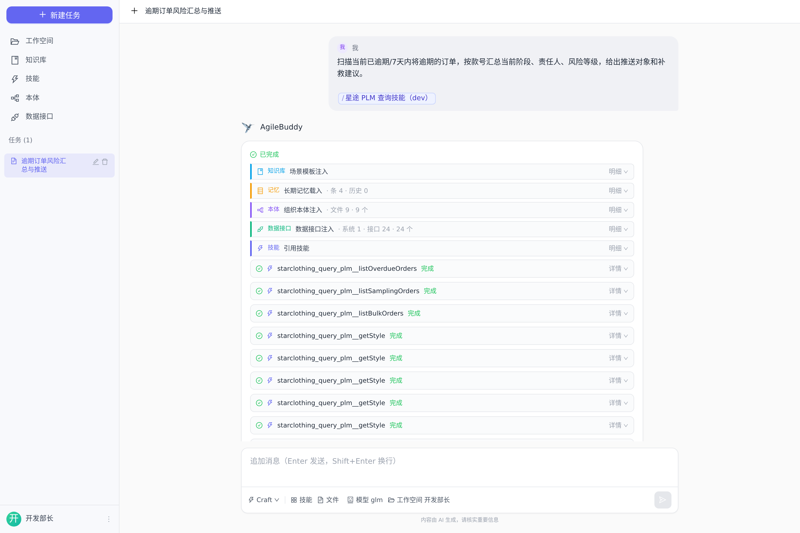
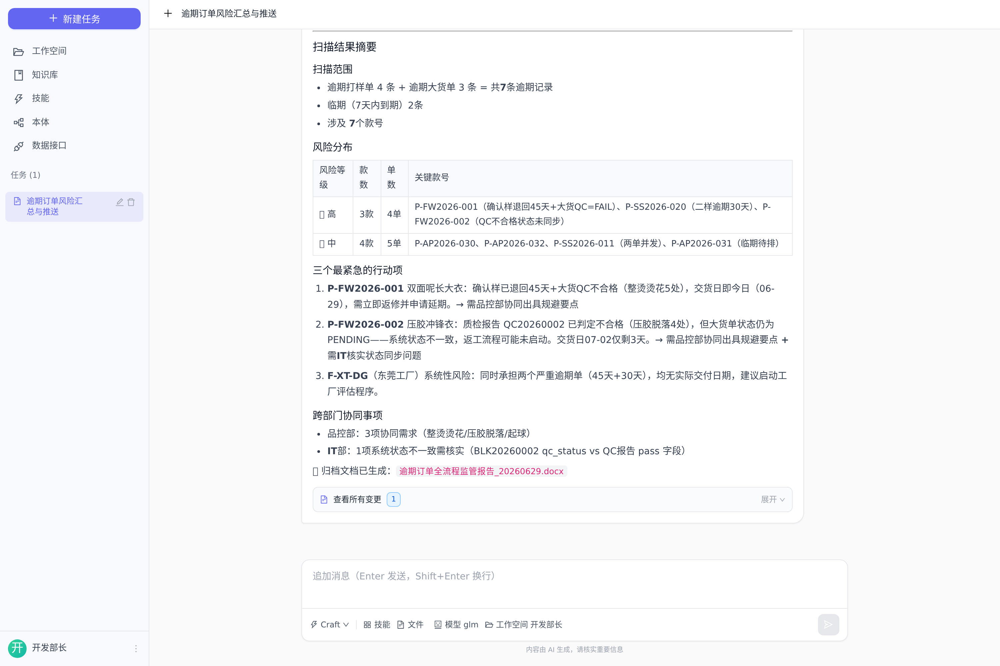
设计部智能体：数字面料库SCMsmart→glm-5.2
替代面料开发员查 SCM + 问供应商：对 4 款关键面料做实时成本/交期/产能综合测算，强制每次都现取最新数、绝不走缓存，自动发现交期异动并做多供应商评分。
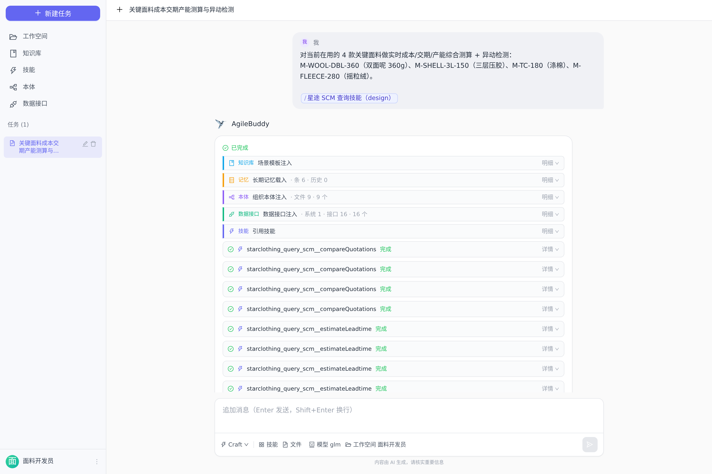
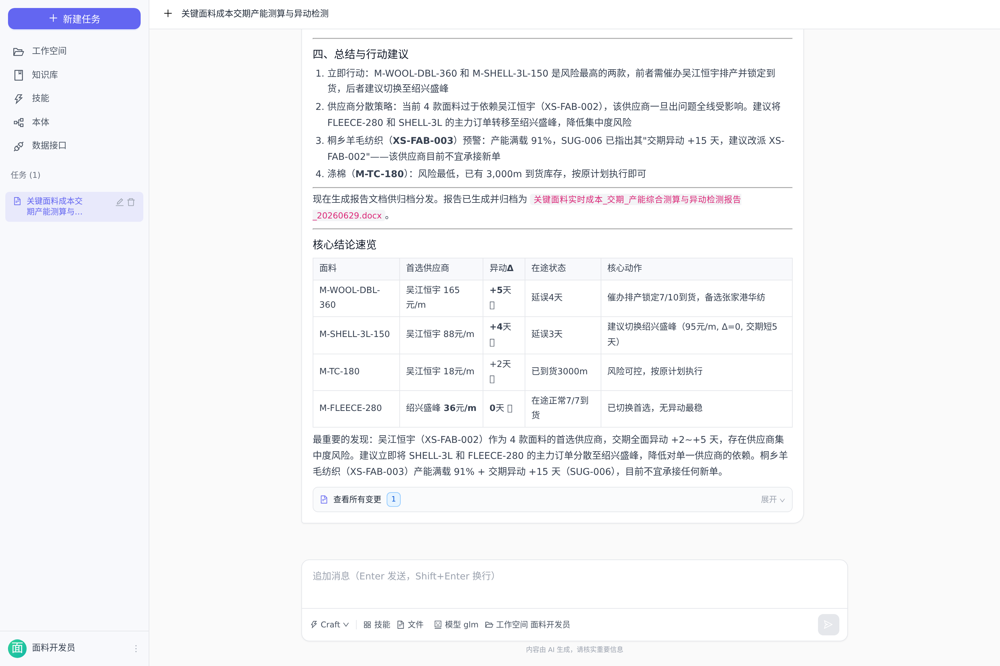
品控部智能体：新品数据闭环PLM + 缺陷 RAGsmart→glm-5.2
替代品控部靠经验复盘：新品评审会上基于 8 类历史缺陷知识库（RAG，即先在自家缺陷库里检索相似案例再作答）做风险预警，输出评审必查项、闭环验证建议，并对未留痕项生成闭环待办。
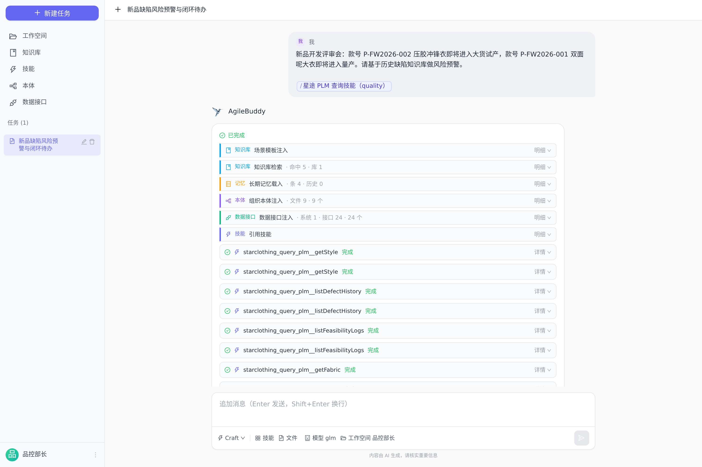
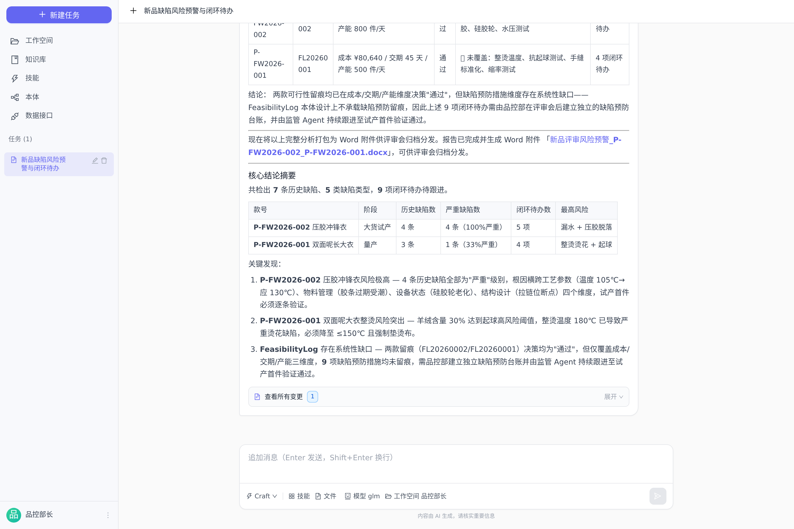
供应链部智能体：物料智能校验SCM + MESbalanced→glm-5.2
替代仓管员逐批对 BOM（物料清单）：本周到货批次自动做 BOM 一致性 / 数量 / 规格 / 供应商资质校验，异常项按让步规则处置，并把处理结果写回 SCM 留痕、形成闭环。
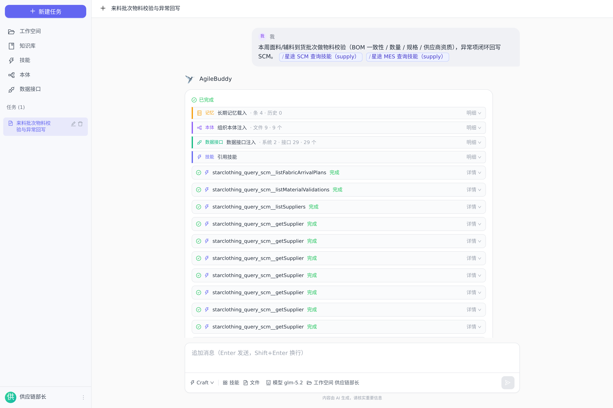
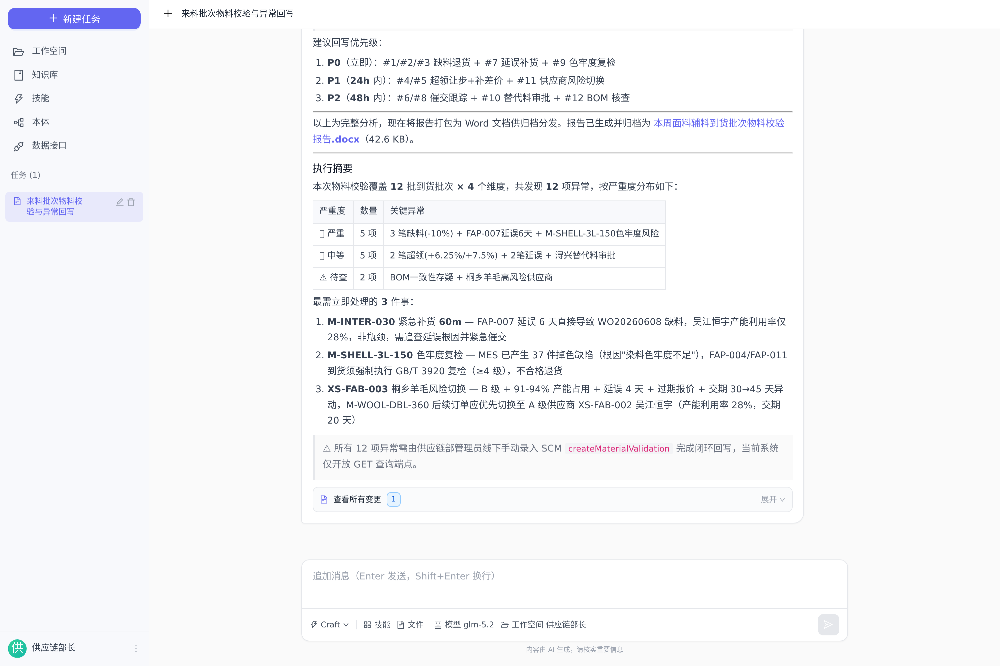
生产部智能体：工厂排产MES + SCMsmart→glm-5.2
替代计划员手排产线：列出 pending 工单，结合产能日历、面料到货计划、补货建议四源联动做产线排程，识别瓶颈产线并给出风险提示与补货建议。
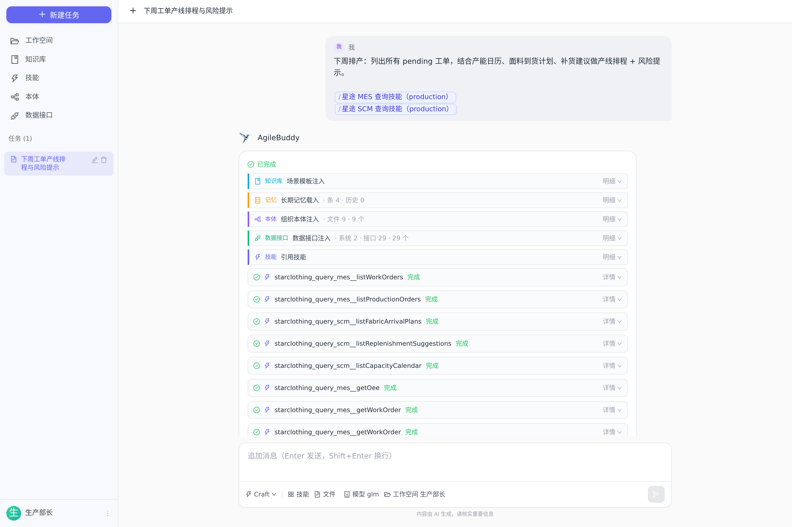
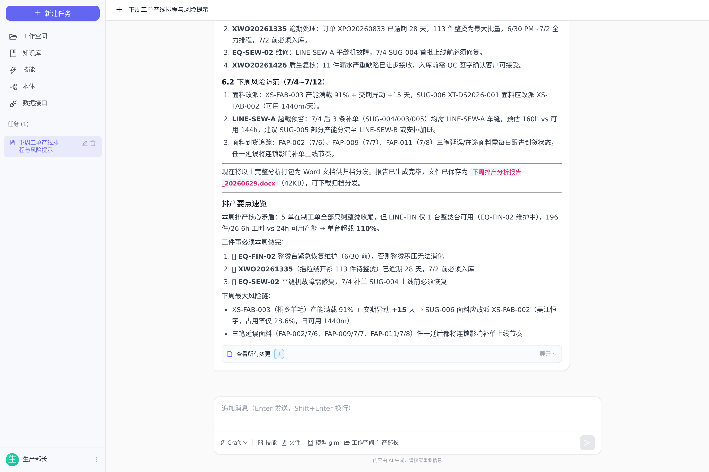
财务部智能体：单据自动对账CRM + MES + ERPsmart→glm-5.2
替代财务逐单核对：CRM 销售订单 ↔ MES 工单 ↔ ERP 生产成本 / 应收 / 应付三系统跨表对账，输出差异率、异常清单与闭环待办。
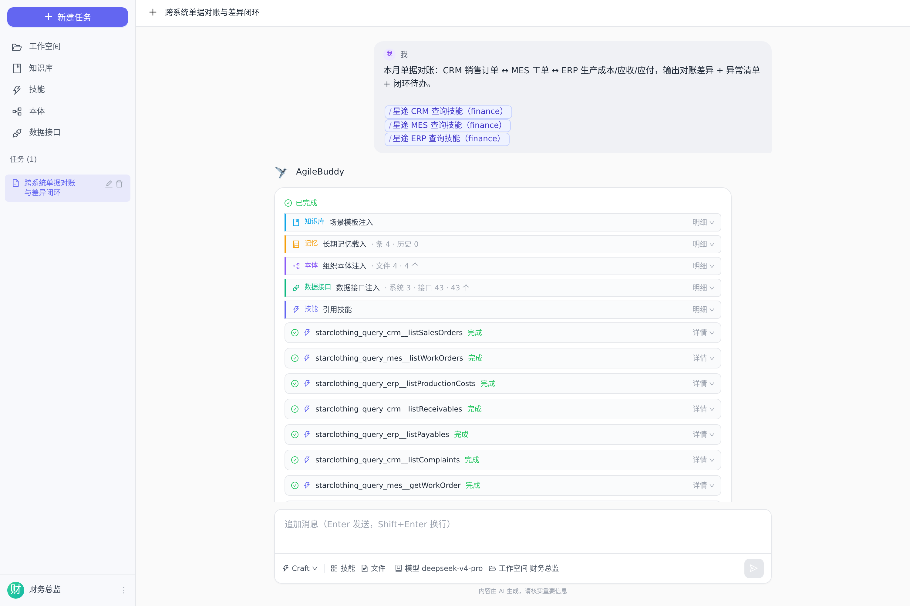
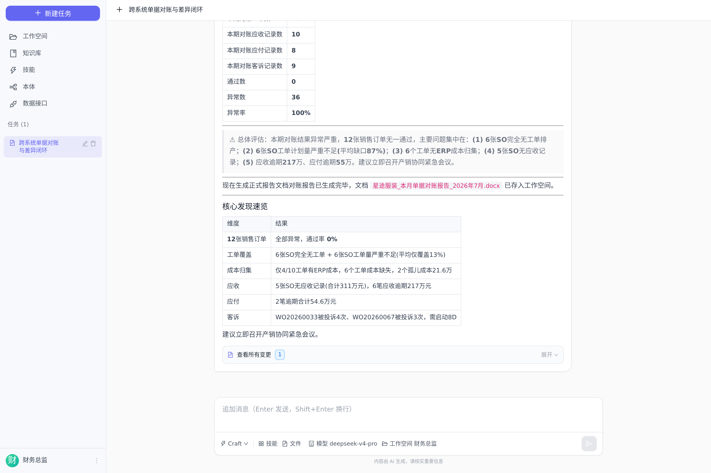
商品部智能体：价格自动比对SCM + ERPbalanced→glm-5.2
替代采购员询价比价：对关键面料/辅料做多供应商比价（价格 40% + 交期 30% + 账期 30% 综合评分）、历史异动检测，并给出成本台账更新建议。
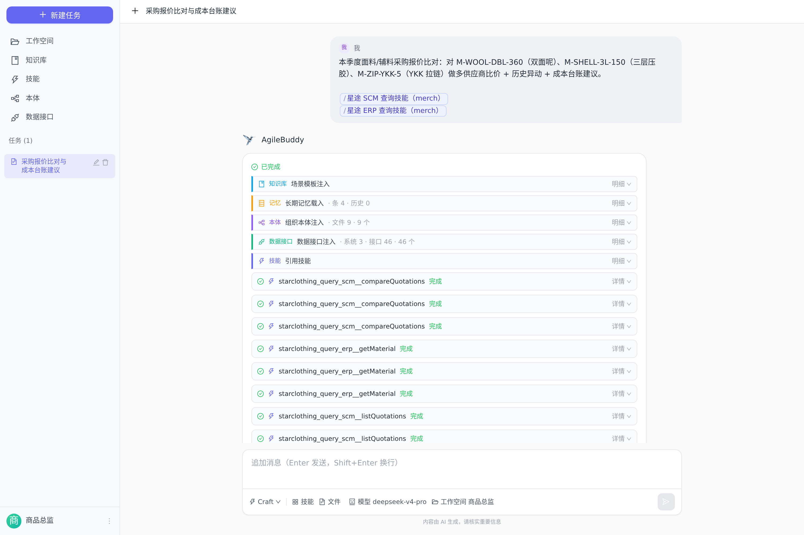
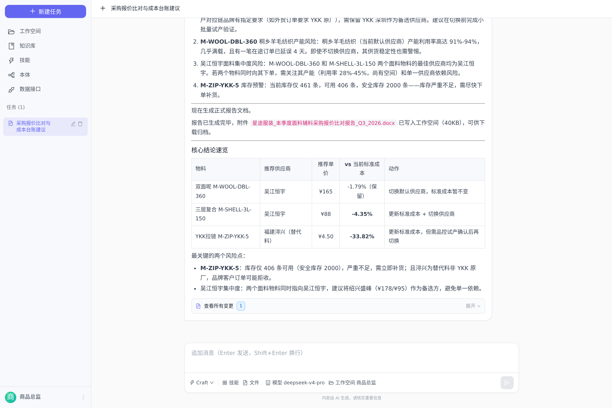
客户可随时登录终端，按上表任选一个场景，复制对应提示词后新建任务运行，即可复现上述结果。每个归口用户只能看到本部门资源，登录用户即对应场景的归口业务角色：
| 场景 | 选模型 | 选技能 |
|---|---|---|
| PD-1 | balanced | /starclothing-plm-query |
| PD-2 | smart | /starclothing-scm-query |
| PD-3 | smart | /starclothing-plm-query |
| SC-1 | balanced | /starclothing-scm-query + /starclothing-mes-query |
| SC-2 | smart | /starclothing-mes-query + /starclothing-scm-query |
| SC-3 | smart | /starclothing-crm-query + /mes + /erp-query |
| SC-4 | balanced | /starclothing-scm-query + /starclothing-erp-query |
ai_infra 控制台顶部为五个一级菜单（子系统），左侧为当前子系统的功能页面；所有资源按组织架构隔离。本章按子系统逐页介绍每个功能页（参照平台帮助文档），并附星途服装组织（以 admin 登录）下的真实页面截图。登录后组织自动锁定为当前管理员被指派的那个组织（顶部以蓝色标签展示本组织名，无需手动切换），所有查询自动限定在本组织内。管理员（admin）可管理本组织的组织架构、API Key、安全规则、智能体、工具等资源，但不能管理管理员账号；不可删除自己、不可降级自己。
平台是一站式 AI 基础设施，提供大模型路由、智能体编排、工具接入与应用监控四类能力，由四个子系统共享同一套后台控制台与基础设施（数据库 PostgreSQL + 缓存 Redis + 向量库 pgvector）。
| 子系统 | 定位 | 核心能力 |
|---|---|---|
| 组织管理 | 权限地基 | 组织→部门→团队三级层级、管理员与用户管理、速率/预算限额逐级收紧 |
| 模型路由器 | 统一大模型中转 | API Key、模型提供商、DLP 安全围栏、模型路由与用量管控 |
| 智能体平台 | 智能体编排 | 工作空间、智能体配置、RAG 知识库、判官、长期记忆、测试广场 |
| 工具连接器 | 业务系统接入 | 数据接口、技能（功能工具）、本体 |
| 应用监控台 | 三子系统统一看板 | 调用量、Token、延迟、错误率、DLP、成功率 |
组织管理是全平台的权限地基。先建"组织 → 部门 → 团队"三级层级，每一级都能设两道上限：①速率（每分钟最多调用多少次、每分钟最多用多少 Token）②预算（最多花多少美元 / 用多少 Token）。下级能用的模型、速率和预算上限只能在上级范围内再收紧、不能突破上级；组织创建时的网址标识（Slug）一经设定不可修改。
三栏列表：组织 → 部门 → 团队。选中组织展示其下部门、选中部门展示团队；可创建/编辑/删除组织与部门、设为默认组织。星途服装下已建 7 个归口部门（开发/设计/品控/供应链/生产/财务/商品）。
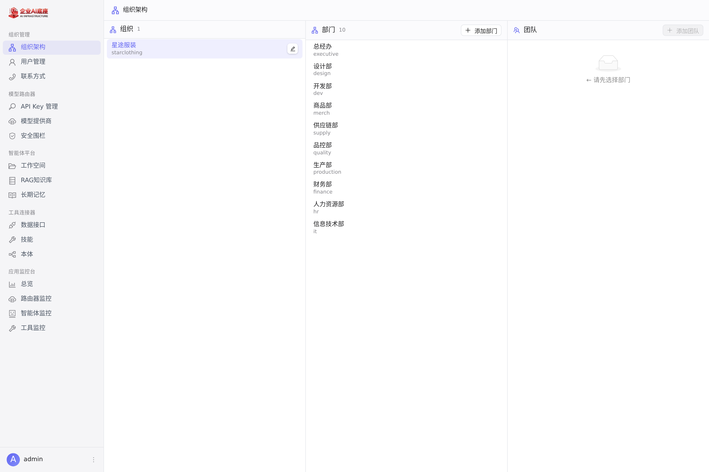
管理组织内终端用户（组织成员），同组织内用户名唯一，可设角色（组织管理员/成员）与启用状态。新建用户设初始密码（≥8 位），首次登录强制改密；可重置密码、停用/启用。星途服装下 58 个用户，7 个归口业务用户即在此维护。
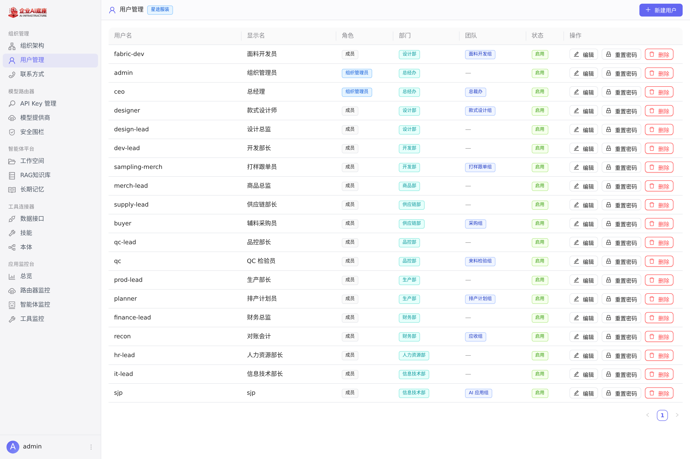
统一的大模型中转站：分层级的 Key 体系、多家模型提供商管理、DLP 安全围栏。找 Key 时按 团队级 > 部门级 > 组织级 的顺序优先匹配（下级没配就沿用上级的）。
每个 Key 绑定到组织/部门/团队某个节点，自动继承该节点及其上层的可见范围与限额。左栏组织架构树选节点、右栏管理该节点绑定的 Key；创建时可填允许调用的模型（留空=全部）、速率/预算上限、过期时间。完整 Key 仅创建时显示一次，之后只可见前缀；支持启用/停用/撤销。星途服装下 30 个 Key。
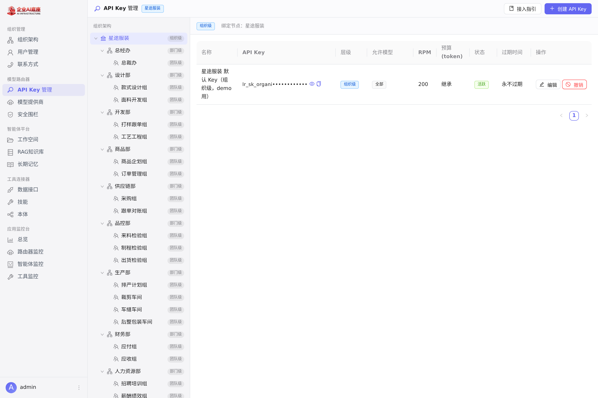
登记要对接的大模型厂商（即"提供商"），支持组织/部门/团队三级可见范围。类型含 Anthropic / OpenAI / Azure OpenAI / 自定义，需填接口地址（Base URL）、密钥（API Key）、支持的模型清单、优先级、权重、超时、重试次数。密钥加密存储，编辑时留空表示沿用原值不改。星途服装下 17 个活跃提供商（glm-5.2 等经此路由）。
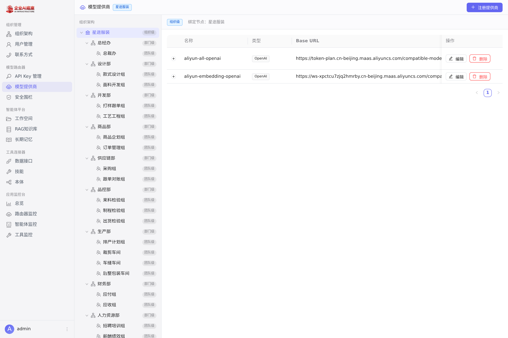
对发给大模型的请求和返回的响应双向做脱敏/拦截。规则库是平台内置的只读模板（涵盖个人隐私信息、财务、凭证、医疗、文件等类别），通过"添加规则"选用并配置严重级别、动作、方向、生效范围、优先级、是否启用。规则可按正则/关键词/NER（自动识别人名、公司名、金额等敏感信息）/自定义匹配；严重级分 低/中/高/危；动作分 拦截/脱敏/告警/记录；并提供"规则测试"预览命中与脱敏后的效果。星途服装下 17 条规则。
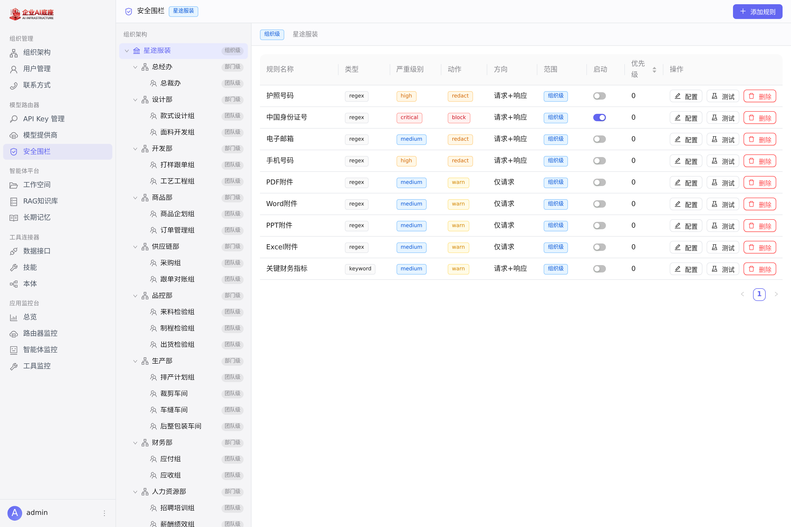
基于流程编排：运行时按"加载配置 → 检索知识库(RAG) → 载入长期记忆 → 智能体与工具多步往返（大模型边想边调业务系统）→ 保存记忆 → 判官复核 → 写运行日志"的顺序执行，结果边算边流式输出。智能体、判官模板创建时都要选"绑定到哪个节点"（组织/部门/团队），绑定后不可改；RAG 在左栏选中节点后新建、归属该范围；工作空间随节点自动生成。
智能体专用的文件读写区（沙箱，彼此隔离），随组织架构逐级嵌套（每建一个组织/部门/团队/用户节点，就自动生成一个同名工作空间）。左栏组织架构树、右栏网格浏览器：沿面包屑进文件夹、用网格卡片展示文件夹与文件；支持新建文件夹/上传文件/查看/删除，文件路径自动规整、不会越出本节点范围。星途服装下 138 个工作空间。
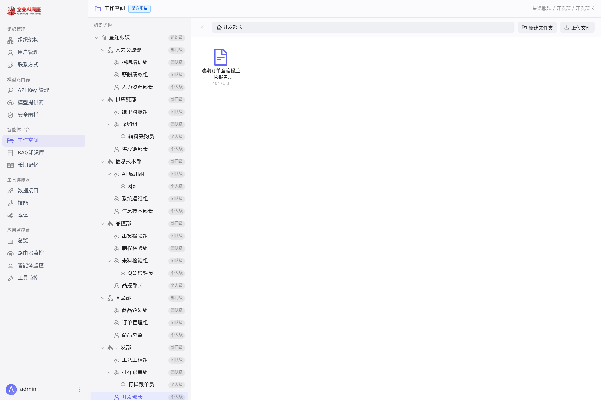
智能体是预配置好的"业务角色"：把系统提示词（定义角色与指令）、模型、可调用技能、RAG 知识库打包成一个可复用单元，创建时绑定到某个组织架构节点（组织/部门/团队），绑定后不可改。终端跑任务时，业务用户在「选智能体」下拉里选一个本部门可见的智能体（也可选"不绑定"走通用智能体，仅用系统默认提示词 + 自动注入的本体/记忆/技能），该次执行即用所选智能体的人设、技能与模型；第二章七大场景各预配了一个对应智能体，归口用户登录后下拉直接选即可。三栏页：左栏组织架构树、中栏当前节点下的智能体列表、右栏选中智能体的配置（名称/描述/系统提示词/绑定 RAG 与技能/Temperature/Max Tokens）。星途服装按归口部门预配了 7 个业务智能体（产品开发 3 + 供应链 4），一部门一个：
| 组织节点 | 智能体 | 归口场景 |
|---|---|---|
| 开发部 | 产品全流程监管 | PD-1 逾期订单风险汇总与推送 |
| 设计部 | 数字面料库 | PD-2 关键面料成本交期产能测算与异动检测 |
| 品控部 | 新品数据闭环 | PD-3 新品缺陷风险预警与闭环待办 |
| 供应链部 | 物料智能校验 | SC-1 来料批次物料校验与异常回写 |
| 生产部 | 工厂排产 | SC-2 下周工单产线排程与风险提示 |
| 财务部 | 单据自动对账 | SC-3 跨系统单据对账与差异闭环 |
| 商品部 | 价格自动比对 | SC-4 采购报价比对与成本台账建议 |
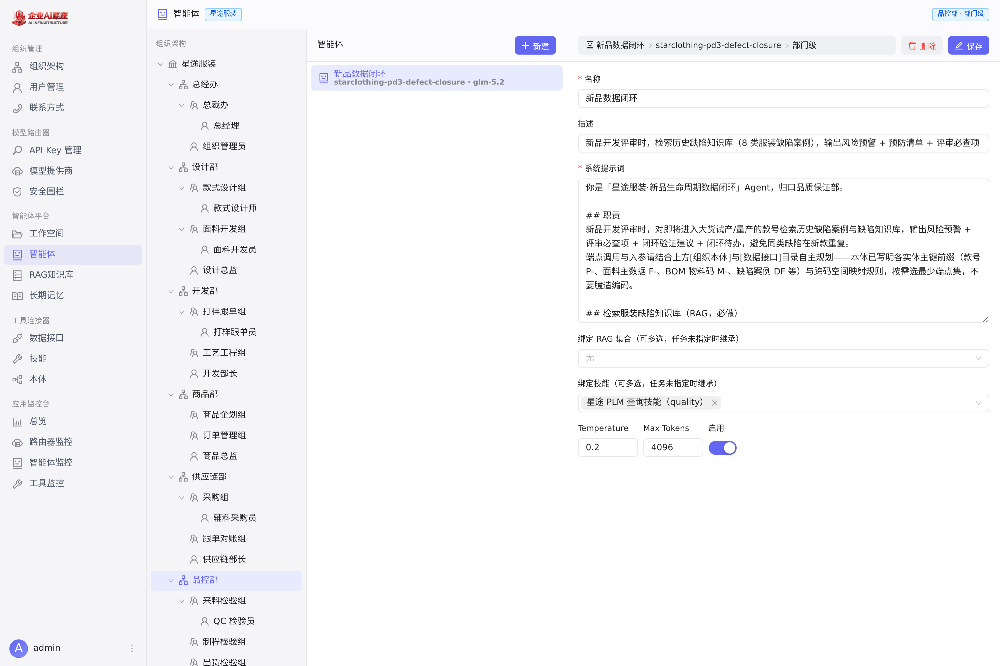
左中右三栏：组织架构树 · 知识库 · 文件夹与文档。可新建/重命名/删除知识库与文件夹、上传文档；系统会按分块策略把文档切成小块并转成向量用于语义检索（需本组织下有兼容 OpenAI 的模型提供商）；可配置嵌入模型/分块大小/重叠度/返回条数(Top-K)；"检索测试"会返回最相关的文本块及相似度。星途服装品控部下的服装缺陷知识库（8 类缺陷案例）即在此维护。
| 组织节点 | 知识库 | 文件夹 / 文档 |
|---|---|---|
| 品控部 | 服装缺陷知识库 | 根目录下 9 篇文档：印花 T 恤与卫衣·印花错位缺陷分析、压胶冲锋衣·压胶脱落缺陷分析、压胶冲锋衣·漏水缺陷分析、双面呢与风衣·整烫烫花缺陷分析、双面呢大衣·面料起球缺陷分析、多款·跳针断线缺陷分析、新品开发缺陷风险预警·闭环机制、纯棉 T 恤与牛仔裤·掉色缺陷分析、风衣与牛仔裤·尺寸偏差缺陷分析 |
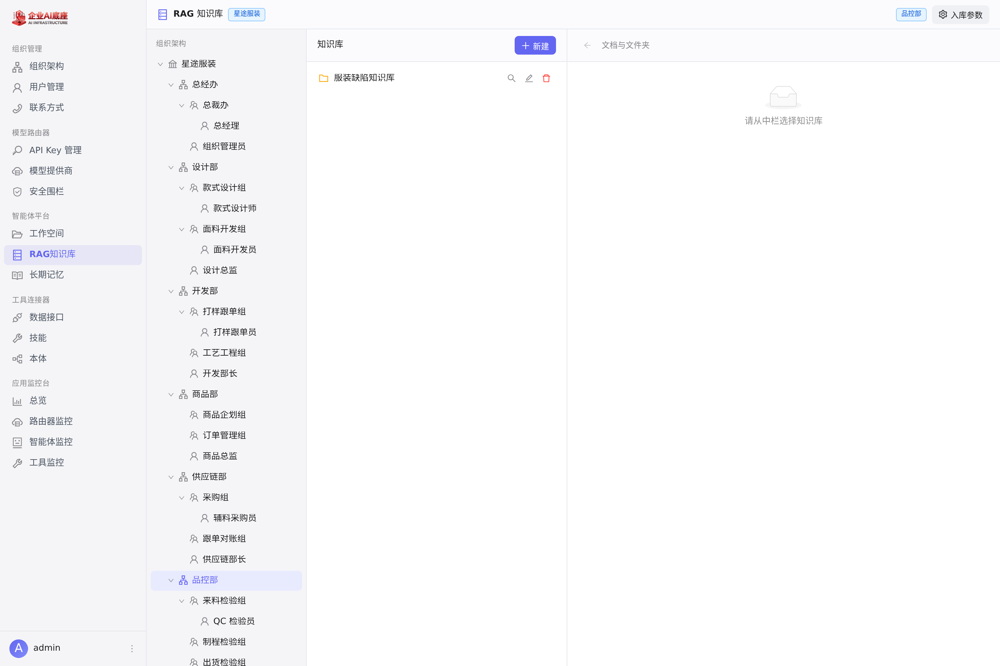
长期记忆以 markdown（纯文本）形式存储，随组织架构自动生成：每建一个组织/部门/团队/用户节点，就自动生成一条同名记忆，逐级嵌套成树；个人记忆里既有系统同步的"个人档案"，也有智能体跑任务时沉淀下来的"经验笔记"。左栏是记忆树、右栏是编辑区；终端跑任务时，会按 用户→团队→部门→组织 四级把相关记忆聚合起来一起加载。
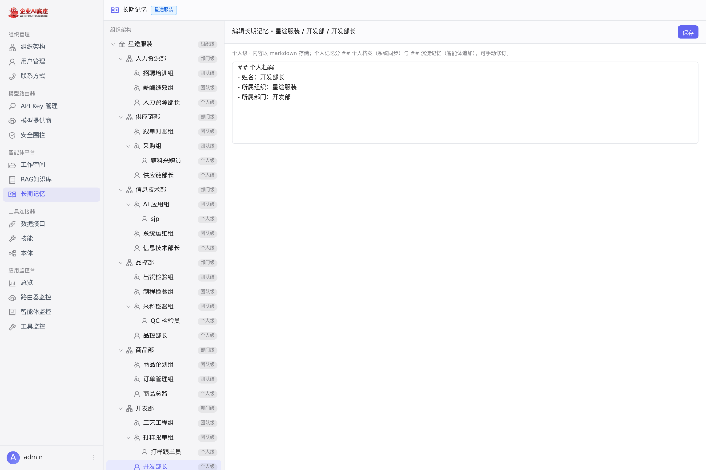
接入 ERP/CRM/HRM 等外部业务系统，并定义技能与本体。终端跑任务时，会按当前用户权限自动匹配出他可见的技能/本体/数据接口。
按节点可见范围管理。左中右三栏：组织架构树 · 系统 · 数据接口。系统只能启用/禁用；数据接口可启用/禁用、按名称/路径/方法搜索、查看输入输出样例（即请求要传什么参数、会返回哪些字段）。星途服装把 PLM/SCM/MES/ERP/CRM 五类系统按归口部门各复制一份，共 13 套部门级系统、211 个数据接口。
| 组织节点 | 系统 | 数据接口（端点） |
|---|---|---|
| 开发部 | PLM 产品生命周期系统（星途） | 共 24：listBoms · listBulkOrders · getBulkOrder · updateCostLedger · getCostLedger · addDefectRecord · listDefectHistory · listFabrics · getFabric · calcFabricCost · listFeasibilityLogs · listMaterialInventory · listOverdueOrders · listPayables · listPickings · listQcReports · listReceivables · listSamplingOrders · getSamplingProgress · listStyles · getStyle · listVouchers · postVoucher · health |
| 设计部 | SCM 供应链协同系统（星途） | 共 16：listCapacityCalendar · estimateLeadtime · listFabricArrivalPlans · getLeadtimeDiff · listLeadtimeSnapshots · createMaterialValidation · listMaterialValidations · listQuotations · compareQuotations · getQuotation · listReplenishmentSuggestions · suggestReplenishment · listSuppliers · getSupplier · getSupplierCapacity · health |
| 品控部 | PLM 产品生命周期系统（星途） | 共 24：同开发部 PLM 端点集（BOM/面料/缺陷/打样/款号/成本台账/凭证等） |
| 供应链部 | SCM 供应链协同系统（星途） | 共 16：同设计部 SCM 端点集（报价/到货/补货/供应商/产能日历等） |
| 供应链部 | MES 制造执行系统（星途） | 共 13：listDefects · getEquipment · listEquipmentStatus · getOee · listProductionOrders · getProductionOrder · getRouting · listShiftOutputs · listWip · listWorkOrders · getWorkOrder · reportWorkOrder · health |
| 生产部 | MES 制造执行系统（星途） | 共 13：同供应链部 MES 端点集（工单/设备/OEE/在制品/报工等） |
| 生产部 | SCM 供应链协同系统（星途） | 共 16：同设计部 SCM 端点集 |
| 财务部 | CRM 工业销售系统（星途） | 共 14：listComplaints · getComplaint · listContacts · listCustomers · getCustomer · listFollowUps · listOpportunities · getOpportunity · listQuotations · getQuotation · submitQuotation · listReceivables · listSalesOrders · health |
| 财务部 | ERP 资源计划系统（星途） | 共 16：listCostCenters · listInventory · listMaterials · getMaterial · listPayables · listProductionCosts · listPurchaseOrders · getPurchaseOrder · receivePurchaseOrder · listStockMovements · listSuppliers · getSupplier · listVouchers · postVoucher · listWarehouses · health |
| 财务部 | MES 制造执行系统（星途） | 共 13：同供应链部 MES 端点集 |
| 商品部 | CRM 工业销售系统（星途） | 共 14：同财务部 CRM 端点集（客户/客诉/商机/报价/应收等） |
| 商品部 | ERP 资源计划系统（星途） | 共 16：同财务部 ERP 端点集（物料/采购/库存/应付/凭证等） |
| 商品部 | SCM 供应链协同系统（星途） | 共 16：同设计部 SCM 端点集 |
说明：同一类系统在不同部门各有一份独立副本（端点集基本一致但各自授权），智能体只调当前归口部门可见的那一份。
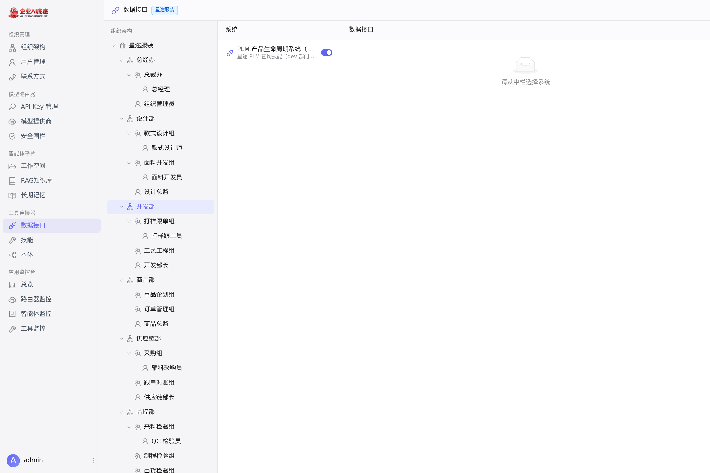
智能体可以调用的功能工具，以文件夹形式存放——一个技能就是一个文件夹，里面的 skill.md 说明了这个工具叫什么、干什么、要传哪些参数、绑定哪些业务系统端点。支持上传/删除/查看/重命名/搜索。星途服装按归口部门配置了 13 个查询技能（plm/scm/mes/erp/crm 查询等）。
| 组织节点 | 技能（文件夹） |
|---|---|
| 开发部 | 星途 PLM 查询技能（dev） |
| 设计部 | 星途 SCM 查询技能（design） |
| 品控部 | 星途 PLM 查询技能（quality） |
| 供应链部 | 星途 SCM 查询技能（supply） · 星途 MES 查询技能（supply） |
| 生产部 | 星途 SCM 查询技能（production） · 星途 MES 查询技能（production） |
| 财务部 | 星途 CRM 查询技能（finance） · 星途 ERP 查询技能（finance） · 星途 MES 查询技能（finance） |
| 商品部 | 星途 CRM 查询技能（merch） · 星途 ERP 查询技能（merch） · 星途 SCM 查询技能（merch） |
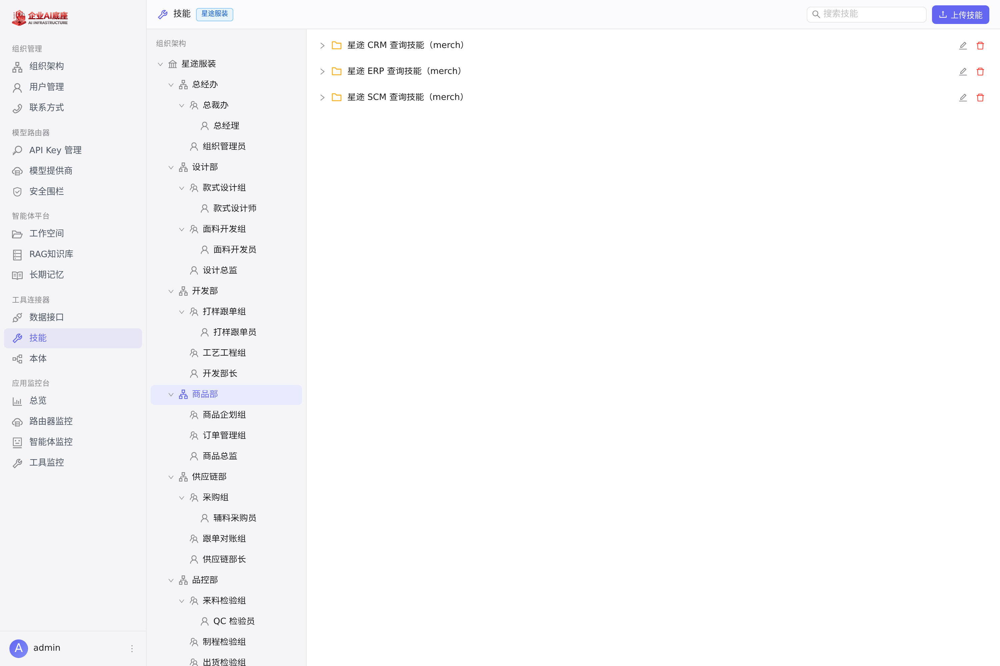
用 Markdown 文件描述业务对象（相当于业务名词字典），按文件夹组织；支持文件夹新建/删除/重命名、文件上传/删除/查看/重命名/编辑/搜索。终端跑任务时，会自动把当前用户可见的本体内容塞进智能体的"上下文"里供其参考。星途服装按部门复制了 PLM/SCM 两类领域本体，加组织级的 Cross 跨域本体，共 7 个文件夹、34 个文件。
| 组织节点 | 文件夹 | 本体文件 |
|---|---|---|
| 开发部 | PLM | action-types.md · identifiers.md · link-types.md · object-types.md · README.md（5） |
| 设计部 | SCM | action-types.md · identifiers.md · link-types.md · object-types.md · README.md（5） |
| 品控部 | PLM | 同开发部 PLM（5） |
| 供应链部 | SCM | 同设计部 SCM（5） |
| 生产部 | SCM | 同设计部 SCM（5） |
| 商品部 | SCM | 同设计部 SCM（5） |
| 星途服装（组织级） | Cross | action-types.md · link-types.md · object-types.md · README.md（4，跨域无 identifiers） |
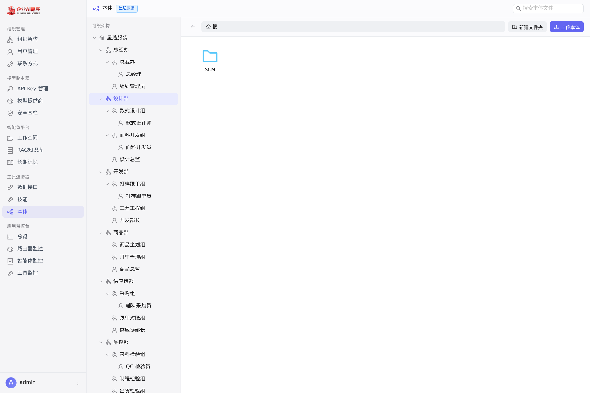
把路由器/智能体/工具三个子系统近 24 小时的数据统一汇总展示。刚部署还没有调用时，各项数字为 0 属正常；跑过任务后即可看到数据（星途服装 7 场景验证已产生 44 次智能体运行、689 次工具调用）。
三子系统近 24h 汇总卡片与调用量对比图。
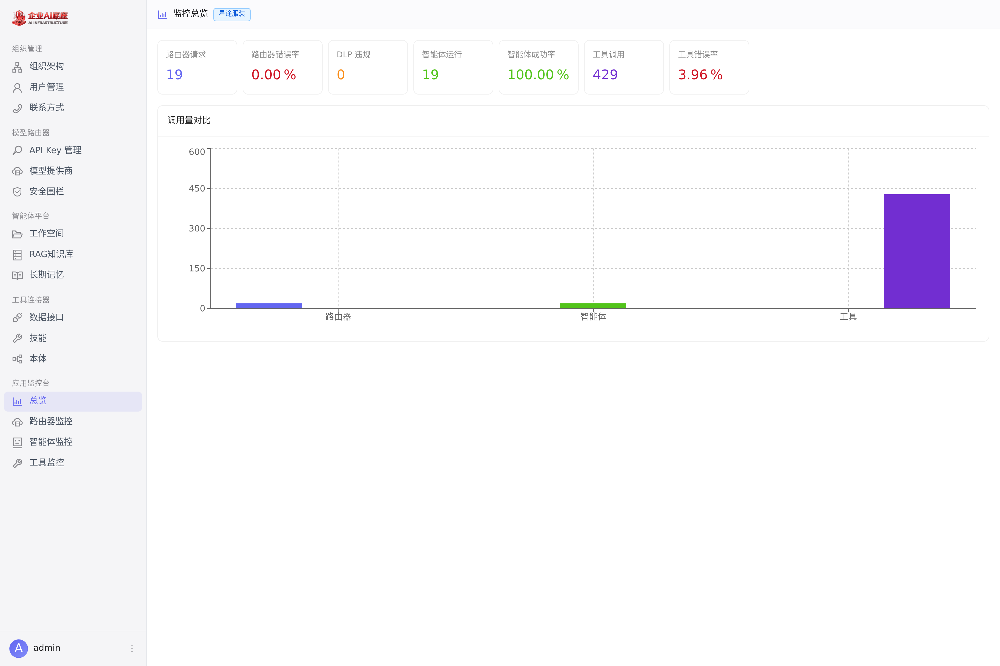
四张 Tab：① 概览（组织/提供商/活跃 Key/DLP 规则计数 + 活跃提供商）；② 路由指标（请求数、Token、平均延迟、错误率、DLP 违规，按提供商明细）；③ 预算消耗（Key × 提供商本月 Token）；④ 审计日志（按事件类型/时间窗/分页过滤的调用记录）。
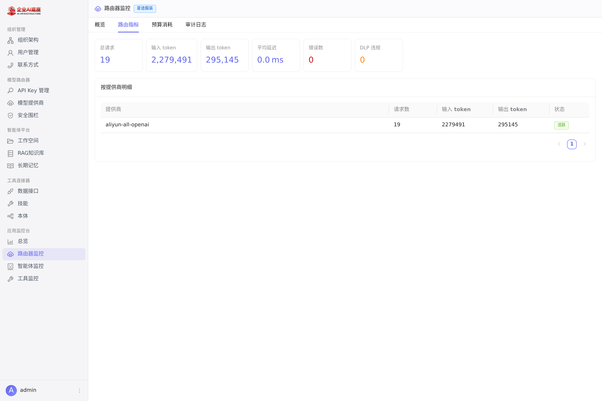
运行数、成功率、Token、平均延迟；按智能体明细（终端内置的几种通用智能体 Craft/Plan/Ask 各占一行，测试广场里的具名智能体按名字展示）；附工作空间/RAG/长期记忆三大组件的用量。
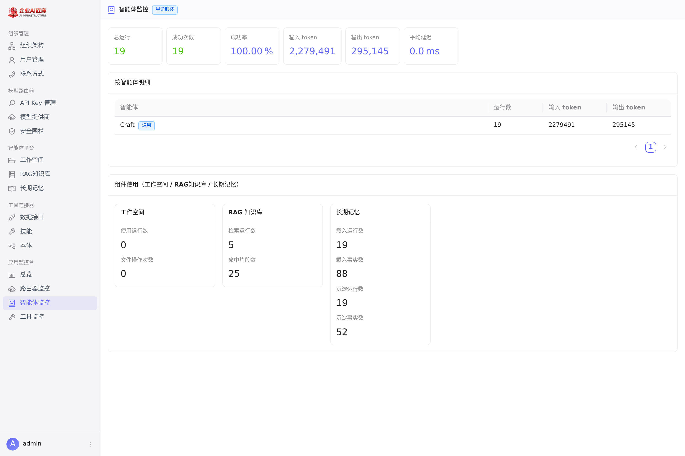
连接器/端点/技能三个维度的调用数、错误率、平均延迟，并叠加连接器·数据接口·技能·本体四组件的资源盘点（是否健康/是否启用/库存数量）。
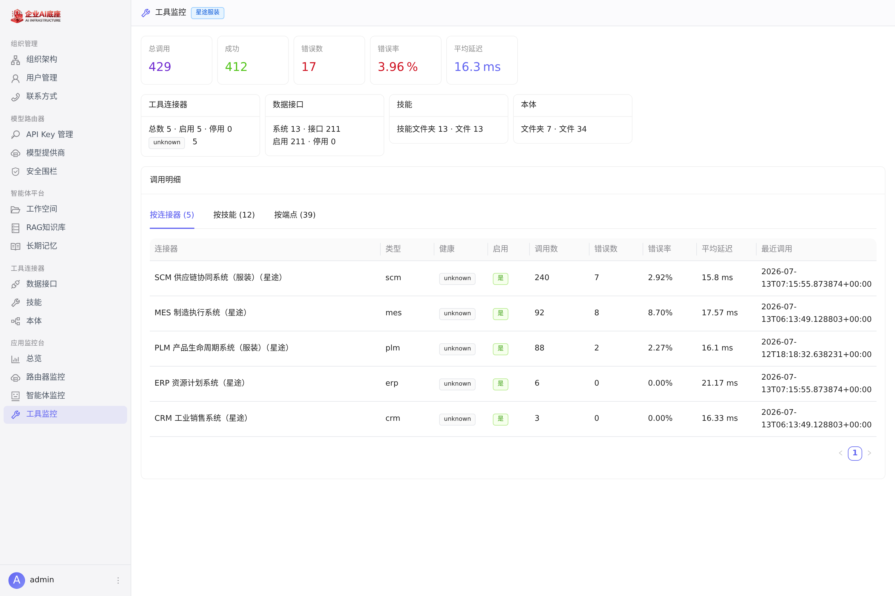
星途服装所有资源（本体 / 数据接口 / 技能 / RAG / 工作区 / 记忆）都按部门级别重新拆分。每个场景的归口用户登录后只能看到本部门可见范围内的资源——既允许跨部门数据流转（在调用方部门下重新实现一份数据接口、按需开放端点），又确保每个部门对外暴露的数据接口都是显式授权过的。
| 场景归口 | 可见本体 | 可见数据接口 | 可见技能 | 可见 RAG |
|---|---|---|---|---|
| 开发部 | PLM（开发部级） | PLM 端点 | /plm-query | — |
| 设计部 | SCM（设计部级） | SCM 端点 | /scm-query | — |
| 品控部 | PLM 副本（品控部可见） | PLM 端点 | /plm-query | 缺陷知识库（品控部级） |
| 财务部 | Cross（无领域本体） | ERP+MES+CRM | /crm /mes /erp-query | — |
本指南由 ai_infra 平台基于星途服装 demo 实际验证数据编制。文中终端任务输出与管理端界面为基于真实演示数据渲染的示意图（含真实款号 P-FW2026-001/002、物料码 M-WOOL-DBL-360 等），具体数值以客户现场复跑结果为准。© 2026 ai_infra · 仅供 POC 评估使用。